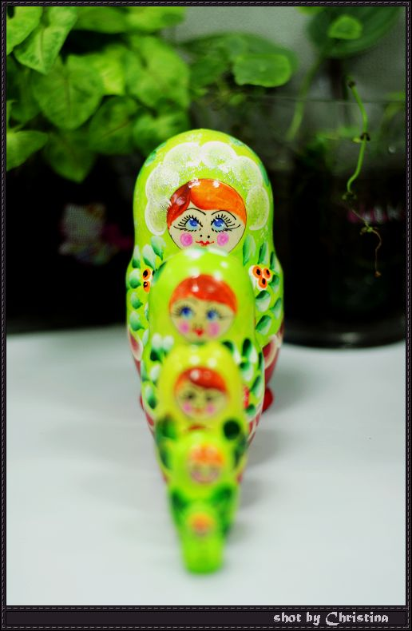
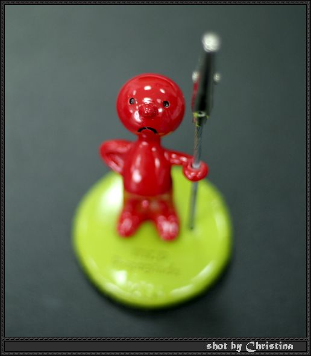
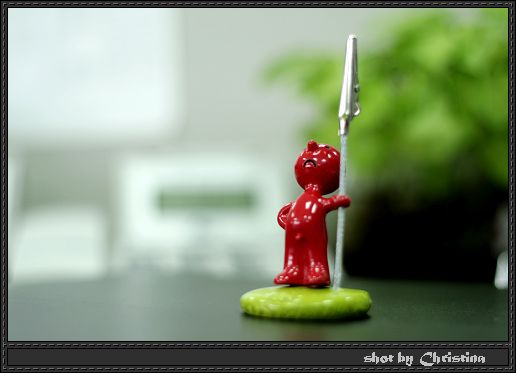
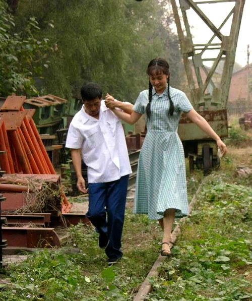
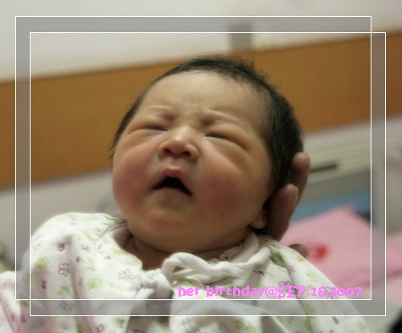
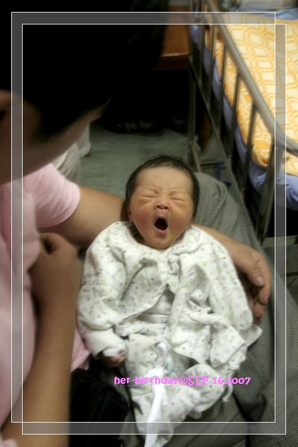
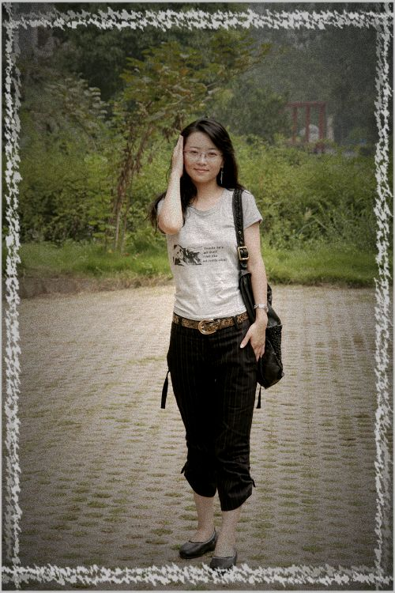
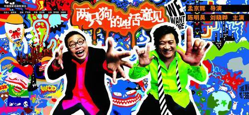
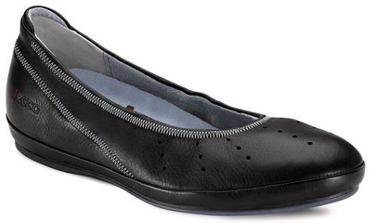

Archives : 2007-09

南京彭宇案 @ Sep 30, 2007
在横戈那儿看其写了篇有关“南京彭宇案”的blog，在南京看电视新闻的人应该多少了解一些吧：，“一个叫彭宇的年轻人去年好心扶一名跌倒在地的老人并送去医院。不想，老人及家人得知要花费数万元医药费时，异口同声指其撞了人，要他承担数万元医疗费。索赔未果后，老人向法院起诉，要求赔偿损失13万多元。2007年9月5日此案一审判决，彭宇被判一次性给付原告人民四万余元。”南京零距离前后报道过两次，感觉孟非也象大多数人一样无奈，罗永浩组织网络募捐，横戈想在南京媒体上支持彭宇一下...总之判决结果引起公愤。
回想我第一次去派出所接一个被人冤枉的小女孩，派出所从傍晚6点关到晚上11点，没人录口供，没人按照程序处理此事。最后放她走的时候，一个警察叔叔怒气冲冲的对着那女孩吼道：“滚，你给我滚，快给我滚...没听见么？我叫你滚！”这就是警察叔叔留给我的深刻印象！彭宇案中，派出所副所长弄丢口供记录，做伪证，政府怎么没有给处理结果？好些人说警匪一家，以前我是这么理解的，警匪相似是警察必须比匪徒还凶狠才能制服匪徒，但面对人民群众是不是应该维护一下政府形象呢？此案判决结果之后，还会有人做好事吗？
生活在南京的我现在特郁闷，南京口碑就这么被糟蹋了！现在开马6也被朋友嘲笑，也是那个“南京马6事件”整的，真TM冤枉！
每个姑娘都不一样 @ Sep 29, 2007
同事从俄罗斯回来送给我的套娃，老话讲“红配绿，丑得哭。”
可这种冲突的颜色我倒觉得很好看，视觉效果很强烈。
每个姑娘的表情都不一样，到了那个最小的姑娘，表情就很呆滞了，呵呵~

sadness & smile @ Sep 29, 2007
sadness~



smile~


无题 @ Sep 28, 2007
左肩肌肉僵硬，酸痛，用电脑保持一个姿势时间太长造成的。
晚饭后妈妈贴了两个圆圆的东西在我的肩膀上，打开另一边的开关，比盲人按摩效果好，上瘾。我父亲每天按摩两遍腿脚，对他多年的经脉曲胀有帮助。我特怕遗传父亲的经脉曲胀，所以常去泡脚捏脚，如果仪器有效果，买回家用倒是方便。
每天出门上班，小区里布满了带着孩子的老老少少，天天早晨如此，婴儿泛滥的2007年，令人诧异的是都挤在一堆晒太阳，唧唧喳喳的声音和我路过他们上班的脚步声很不和谐。
从德国寄来的八音盒，和中国茶一样的色系。

中秋翌日 @ Sep 26, 2007

全家人聚到姐姐家里过中秋节，居然吃到了石榴，还有期盼中的抹茶月饼。以前过中秋吃不吃月饼无所谓，现在惦记着吃月饼，难道老了回归传统了？中秋前一天接到jiajia越洋电话，老先生那天终于迈入30行列，颇有感慨的声音，话倒是比见面时多了许多。人家觉得我变了，好象用了安静之类的形容词。现在的生活简单而知足，喜欢安静的做自己喜欢的事，哪怕发呆也是享受。从5月忙忙碌碌到现在，非常需要一个假期，带上相机和全部的镜头悠闲度过几天，想到度假最先想到的是瑞士的雪，其次是海边，接下来是2002年对于曼谷的记忆。 忙碌使表情木然 ，内心茫然。
《金婚》之惑 @ Sep 23, 2007
这段时间一直在看江苏城市电视台播放的《金婚》，讲述一对夫妻从1956年到2005年的婚姻，开始看得时候觉得这部连续剧比类似的生活片幽默风趣，有小时侯的记忆，后来渐渐地把它当婚姻爱情教育片看了。江苏城市电视台为这个连续剧做了大幅广告，遗憾的是这么好的剧居然英文翻译成"Gloden wedding",金婚的中文理解是不是应该是金色婚姻？“Golden marriage"？不得不佩服这部剧的编剧王宛平 （中央戏剧学院戏剧文学系的副教授），能将80年代前的生活描述的那么贴切真实。

看这部剧感慨婚姻真是一个消磨美好的过程，我至少还有30年要象模象样的生活，果真象这部剧表现的那样，会是怎样的艰难？心理折磨是最最艰难的问题，如何面对如何处理还真不是一般心理素质的人能做好的。
很多上了年纪的人对于他们自己的婚姻常会说：“我们都一把年纪了，还折腾什么啊...”“只要他对家庭负责，随便他在外面干什么...”我常常也会说出象文丽一样的台词：“别人那样不代表我就得那样，我不要我的婚姻象他们一样。即使年老。”有人认为文丽缠人，太认真，矫情...可我认同文丽的观点。
看这部剧产生的另一个困惑是做贤妻良母，服侍老人抚养孩子照顾丈夫，这个过程有可能会失去部分或全部的自我，年轻时夫妻恩爱，中年后变成黄脸婆，生活的重心就是家庭家务，那时男人还爱你什么？仅仅靠以前的感情维持婚姻关系么？女人不断奉献，年老时，婚姻中除了亲情还有爱情么？我们是否就该接受这样的现实？
二十来岁的时候我就想着以后一直单身，正是因为没见着有几个人的婚姻是美满的，一个人活得反而清爽。这部剧又触发了我的疑虑，环顾周围的现实生活，真正恩爱到老的又有几对？这个浮躁的社会，婚姻俨然成了大多数人的符号。女人究竟应该一直奉献？还是自私一些？
***********************************
当你老了，头发白了，睡思昏沉，炉火旁打盹。
请取下这部诗歌慢慢读，
回想你过去眼神中的柔和，
回想它们昔日中的阴影。
多少人爱你青春欢畅的时辰，
爱慕你的美丽，假意或真心。
只有一个人爱你那朝圣者的灵魂，
爱你衰老了的脸上痛苦的皱纹。
灾难 @ Sep 18, 2007
工作非常忙的感觉就象进行一次长跑比赛，拼命冲过那条带子又如何？不晓得忙个什么劲儿。台风就要来了，听说浙江上海等地紧急疏散20多万群众，南京的傍晚清冷的安静，有点电影中灾难即将到来前的情形，就让暴风雨来得更猛烈些吧，一生经历一次大自然灾难，没白过。
又一个新生儿 @ Sep 18, 2007
嘴巴和她的爸爸(我的同事)很象，出生才两天的小宝贝，很聪明哦。一个人睡在床上就大声哭泣，抱起她哭泣便嘎然而止。离开母体后的孤独感，使得她极为想亲近人。


人生数字.数字魔力 @ Sep 16, 2007
看完DVD《The Number 23》，有意思的是生活中我也常注意到数字，开车的时候注意别人的车牌，红绿灯读秒数，记录手机号码、电话号码，是分三个数字还是两个数字分段记录，每个人的习惯也不同。每个人生活中的数字非常多，身份证号码、护照号码，公司的公号，分机号码，直线号码....等等，数字具有一定的魔力，有人迎接这种魔力，并受到数字掌控，有人却避开这种魔力。《The Number 23》中主人公没有避开，最终精神分裂。现在社会各种压力大，患强迫症的人非常多，强迫症最典型的例子是以为忘记关门，以为忘拿钥匙，总是不断反复的确认。事实上受到数字掌控的人也是强迫症的表现。
我认为D9版本中的电影花絮比电影本身更有意思，听许多专家讲解数字的神奇，世界皆由数字组成，并有一定的规律可寻。来自电影 《The Number 23》花絮中数字学家格莱尼斯.麦克坎斯，《格莱尼斯知道你的数字》的作者对于数字的解析，是我一字一句从DVD中扒下来的哦，用了45分钟左右。
根据下列公式测算，我的人生数字是“8”。

数字学是数字的科学，有着2500多年的历史，古希腊科学家毕达拉斯闻名暇耳就是因为他创造了数字学。数字学由1到9这些数字构成，毕达拉斯他对每个数字下了定义，来定义每个人的身份。定义一个数字有很多方法，比如6个数字组合在一起，你的名字里有3个数字，生日有3数字，还有一个灵魂数字，一个个性数字，一个名字数字，和你的名字有关。但是人的名字是可以改的，但是你改不了生日，所以它就很神圣了。你可以从你的生日里得到你的人生道路数字，这就是数字学里最重要的数字，意味着你不按照这个数字去做，你一辈子都不会开心。
你出生的日子很重要，那个数字很重要。它叫做生日数字。然后一个态度数字，来自你的出生月份和日期，你把它们拆分开来，它都是由1到9这些数字构成，这是数字的布局，它决定这个数字在你一生中的重要性。
现在你的名字很重要，因为你要见人的时候要用，对了，大部分见人后会说这个人给我坏印象，或者你见另一个人时会说我喜欢那个人，我保证这跟数字有关。因为人有三种数字：
一个兼容的数字，你可以同意也可以不同意；
一个自然的匹配数字，就象跟做梦一样，就象一种自然的亲和力，不管你怎么说，它们都会影响你；
还有一个剧毒的数字，不管怎么说别人都不理解你说了什么。
我相信通过自己的学习，知道你生活中的每个人，你可以有一个更充实的人生，跟理解你的人打交道。如若不理解，他们对你是有毒的，你可以找到一个新的方式去沟通，让他们理解你。
下面是数字学家格莱尼斯.麦克坎斯，《格莱尼斯知道你的数字》的作者，今天我想教你如何找到你的人生道路数字。原因很重要，你必须按照这个数字去做，这样才能过得开心，现在我用金.凯瑞的名字做示范，他的生日是1962年1月17日，你只要把它拆成一个一个的数字相加，1+9+6+2+1+1+7=27，2+7=9，所以，金.凯瑞人生道路数字是9。
现在，我来定义每个数字：
1，你做什么会感到高兴呢？，你该做什么呢？你受人尊敬，人们景仰你，这样的人很有竞争力，好莱坞很多人都是数字1，Tom Hank，Tom Crurs，Nicholas cage，很多在好莱坞吃香的人都是数字1，因为他们拥有竞争力；
2，数字2的人是和事佬，媒体从业者，旅游通，基本上他们很适合做社会工作，如果他们的朋友有麻烦，想重归于好，他们是合适的人选。数字2的弱点是当被逼无奈时他们会发怒，但事后他们会比惹他们发火的人还糟糕，比如说感觉不舒服，我是个情人不是死敌，这就是数字2的特征；
3，是善于沟通的数字，充满活力，成全别人，也是天生的喜剧演员，大名鼎鼎的喜剧演员都是数字3，Bing Crosby，Robbin Williams，3代表着幽默，善于表现自己，他们还是天生的顾问，数字3的人喜欢给人忠告，不管你要不要。如果你有麻烦他就会帮助你，他会与你沟通了解原委，他们还是优秀的作家和艺人；
4，有求知欲，很好奇，奥普拉.温弗瑞就是一个很好的例子，不仅她知道学习还知道教育我们，数字4的人受不了骗子，如果有人骗他，他会不依不饶，他不会不了了之。如果他们有某种关系发生了欺骗，如果在背后欺骗他们，他们就不会放过你，会叫欺骗他们的人滚蛋；
5，我们在DVD上谈过很多有关5了，数字5代表永远不会无聊，充满自由、乐趣和冒险，竖子的人总是记得解脱逃脱摆脱，他们会用毒品、酗酒等类似的方式。喜欢地理和工作，无穷无尽的体能，喜欢参加派对，我认为他们是大善人，比如你去参加任何派对，在房间内测试一下数字，你会发现数字5的人总是留在最后离开，酒逢知己千杯少，千言万语道不尽，他们喜欢庆祝今生，他们善于给予，接受会令他们感到不舒服。因为有时候他们会怀疑你的初衷，数字5是天生的侦探，他们喜欢打破沙锅问到底。他们最喜欢到世界各地游玩，他们不应该早早结婚，因为他们经常会犯同一个错误，他们不会长时间将兴趣停留在同一个地方同一个人身上，不喜欢隐居，他们宁愿说再见也不愿等待，除非他们选中了绝配；
6，这是最有魔力的数字，我们最痴迷的数字，如果是男性，他们需要成为城堡的国王。数字6的玩笑是当你们全部下跪说自己毫无价值时，数字6会让你们退下，但他们的确需要你尊敬别人的劳动，他们很有责任心，积极的地方是他们很善于控制灾难，比如George Bush，鲁迪.朱丽亚尼就是这样的人，因为911事件发生后他们表现突出，因为他们是勇敢站出来拯救世界的人，数字6需要学会克服困难，他们要学会说情况很好，我是应该的。因为他们不习惯顺利的航行；
7，代表追求信仰，他们经常问我是谁？我是什么样的人？我为什么在这里？他们是人生的观察家，有时候他们感觉自己不属于这个世界，他们因此成为了伟大的作家，因为他们是观察的行家，还有可能成为导演。他们喜欢了解世界，对于数字6开玩笑的说，如果宇宙飞船出现了，他们会跳出来说，我要走了，我就知道我不属于这个世界。他们一定第一个踏上飞船，这就是数字7的特征；
8，数字8的人善于管理金钱，他们一定要经济稳定，他们还要学会采纳意见，数字8倍受难以采纳意见的困扰，他们总是想自己做决定，这就是他们要克服的缺点。他们注重品质，甚至你知道有句俗语“人为财死，鸟为食亡”，这就是数字8，数字8和金钱的关系非常微妙，换言之数字8还分两种：一种是非常富有，银行有存款，但是他们不会拿去花；另一种则看着钱从手上溜走，一无所有。所以他们要找到更好的金钱关系，保证经济安全。至于那些跟钱有关系的数字8来说，他们需要这样假设，假如我有很多钱，我可以捐钱，想捐就捐，但是那些不喜欢钱的人只能过悲惨的日子。这是他们必须要克服的；
9，数字9是数字学里最高尚的数字，是天生的人道主义者，关心民生。他们会禁不住忧国忧民，数字9必须克服自己的伤口，我发现很多离婚家庭的孩子，或者他们被领养，或者他们感觉被遗弃，这种事情通常都是和数字9有关。缺点在于感觉自己对于家庭赋有责任，他们还得学习建立更好的界限，不要利用别人，他们永远不会说他们需要帮助，即使他们处在水深火热之中，比如溺水了，脑袋在水面浮沉，别人以为他们在玩，其实他们要淹死了。竖子在帮助别人的时候，要学会沟通。
现在你知道数字1到9的人生道路了，我们还要了解数字是3个一组的，我称为天然匹配，天然匹配就象天和地一样，就是理解你的人，因为他们和你很相似。
1，5，7----
实际上哪怕你是1号人，或者是5号7号人，他们都是很有特征的，1号和5号、7号人很类似，因为这是一个天然的匹配对象，所以对于初学者来讲，1、5、7是思维数字，这类人大脑发达，不会停止思考，我一直认为这是理想主义者，他们可能成为制片人，导演，作家或是幕后人物，他们创意很多，他们应该掌控自己所从事的事业，因为他们不甘愿被人管，他们不需要身边有老板，数字7有独到的品质，所以他们需要专注自己的事情。如果我是1、5、7号人的老板，我会让他们各行其是，相信他们能把工作干好，能给我好东西，如果我过于批判或关注的话，他们会有叛逆心理。
2，4，8----
2，4，8号人有生意头脑，比如说4和8，他们会很强硬，比如说唐纳德.提兰普，玛莎.斯图尔特，这些人都是生意人，比尔.盖茨就是4号人，唐纳德.提兰普也是，玛莎.斯图尔特是8号人，他们工作努力，是工作狂，好象他们永远赚钱不够似的，不会满足。你们可能要问了，这个数字的缺点是什么？但是你知道他们最大的恐惧是什么吗？经济安全！他们担心的是万一没有足够的钱怎么办？要是我一无所有怎么办？所以他们要克服这个。数字2有点敏感，他们也有生意头脑，但是他们有良心，换言之，他们不会利欲熏心，他们有良心，所以他们做自己喜欢的事情。但是2，4，8号人担心经济安全问题，必须要掌握。
3，6，9----
3，6，9是有创意有头脑的数字，3号善于沟通有喜剧天分，6号有魔力，我们喜欢他们，9号则是人道主义者。
所以，有创意有头脑的人是3、6、9，有生意头脑的是人是2、4、8，有思想的人是1、5、7。6个数字就能构成你的人生数字，你会找到适合自己的数字。你的人生数字可能是3，你的灵魂数字可能是1，个性数字可能是2，所以你要学习1到9全部的数字，以便解析出完全的你。以及决定哪个重要哪个不重要，在你的构图中布置好。
無題 @ Sep 14, 2007
要是有希望，
常常還是像飛娥撲火般地，
直到燒得焦黑。
那張臉終于不可收拾，
它很寂寞，很關閉，很無聊，很潦草，
就像那一段你的心情和你的生活。
你也一定慢慢回想起了那些艱難的日子。
你從一個單純的孩子開始，漸漸看到生活里的
霸道、阿諛、出賣、猥瑣、報復、貪婪，
你漸漸看到了生活里的臟。
生活造就了一切，而不是他。
他也是一個人，一個也許寂寞著的人。
他不是一個可以給你一切的上帝。
－－《起舞》


《两只狗对生活的意见》 @ Sep 12, 2007
《两只狗》是穿西装的二人转？没耽搁，打了上海的订票电话，打算预定10-2孟京辉话剧《两只狗对生活的意见》，被告知9-30至10-7的票全部订完了。
上海爱艺术的人真多，这次看不成年底去北京看。

剧情介绍：
两只狗对生活的意见很多，他们
对贫穷有意见，
对暴发有意见，
对网恋有意见，
对偷情有意见，
对饥饿有意见，
对减肥有意见，
对OFFICE LADY有意见，
对女秘书和男老板有意见，
对二环路堵车有意见，
对苏丹红有意见，
对非典有意见，
对转基因蔬菜有意见，
对高价幼儿园有意见，
对招工强调高学历有意见，
对养老保险有意见，
对当啷入狱有意见，
对春节买不到回乡火车票有意见，
对假LV有意见，
对英雄流血又流泪有意见……
他们经历了生活的种种，他们像摇滚游吟诗人一样高唱他们对生活的意见，终于，他们告别地球，出走太空。
中国国家话剧院出品的，由著名实验戏剧导演孟京辉执导、著名实力派青年演员陈明昊、刘晓晔主演的话剧《两只狗的生活意见》将在2007年8月30日至9月14日在上海话剧中心D6空间小剧场演出。
作为2007年度北京最火爆的小剧场话剧，《两只狗的生活意见》2007年5月至6月在北京连续上演35场，门票提前15天售完，被称为年度最佳小剧场戏剧作品，也被戏剧界评为近十年来最具实验探索精神，最具国际戏剧表演水准，最能体现中国当代艺术审美品格，最有票房号召力的戏剧精品。
话剧《两只狗的生活意见》由中国优秀青年戏剧演员陈明昊和刘晓晔主演，他们被誉为“孟氏戏剧金牌爆笑组合”。“两只狗”融入了意大利即兴喜剧，法国喜剧和中国传统喜剧的表演手法，创造性地将热情洋溢的即兴表演风格和扎实的现实主义表演熔为一炉，这两个演员每人扮演角色均超过30个。剧场效果轰动热烈，在2个小时的演出过程中，观众笑声多达630次，掌声多达140次。
该剧讲述了两只狗离开家乡进入城市的生活经历。他们试图在城市里寻找到幸福的生活，寻找到伟大的理想，然而城里的世界并不象他们想象得那么美好……四处碰壁之后，他们对生活产生了各种意见，这些意见是他们简单纯洁的头脑无法理解的生存难题。为了能够吃上一口饱饭，来福和旺财在街头卖艺，参加明星选秀进入娱乐界，去当保安，被富人收养又被抛弃，被打狗队打得遍体鳞伤，最后，他们决定勇敢地面对生活，不管生活有多艰辛，一定要勇敢地走下去！由“精彩的导演、精彩的演员和精彩的意见”构成的小剧场话剧《两只狗的生活意见》无疑是近十年来当代中国小剧场话剧的颠峰之作。
畜生，我靠！ @ Sep 12, 2007
一早心情很好的坐在办公桌前，接一手机，海关打来的，上周要我补充材料，在本周三前送去。人家一早来电话说：“你还当真周三才送呀？”......那口气......我靠，海关没给你派事做呀，就这么惦记着我那材料？周三的早晨不是才开始吗？你当我们天天跟你们海关的人一样没事干挖空心思捞好处么？说话跟吃了枪子儿似的，在海关遇到各种烂人太TM多了。我们公司在码头被海关查验索要现金的事屡见不鲜。
有回在旅检一副科长那脸拉的跟驴脸一样长，等他盖章，人家坐着发呆楞说没空，还凶巴巴的说你催我工作啊？我靠，我哪敢催海关人工作呀，我在等你工作，你牛。我就这么对他说了。盖章前那副科的脸跟黑社会似的，恐吓我么？我就怕你不恐吓！看谁心理素质好？我最喜欢这种锻炼了。一科长劝我不要投诉他了，说他是新来的，一人被投诉会影响到全科人的利益，我真算了。后来又遇见过那烂人，那笑跟树上烂了的果子一般。
还有一次核销手册，一科长打电话来劈头盖脸地训了我一顿，谁允许你用复印件核销的？我说你们当时办事人员啊，科长说：“他有什么资格同意你用复印件？”我火大了，他代表海关办公，他没资格谁有资格？你一个人说了算？那边气急败坏的说：“你们领导呢？叫你们领导来。”一般话说到这地步就特没劲了，“领导多呢，你要叫哪一个啊？”“叫你们办公室主任来。”“我告诉你电话，你自己打给他吧。”没过一会主任打电话来：“我们最近打点的少了，正好是元旦......”就这么些人把海关的形象都搞得跟贪婪的豺狼似的。这德性，代表政府服务大众，简直是糟蹋！有时看新闻里宣传海关如何如何，让人嗤之以鼻，两眼冒火，现实根本不是那么回事！
常有人说我小资，其实搭不上边。恰恰有时特愤青，尤其在每月生理周期之前，我就是一标准的愤青。
我不在江湖 @ Sep 11, 2007
电话约了女友晚上一起逛街。
女友还在病毒性感冒中。
地点在德基广场。
作好心理准备对于下班高峰交通的恶劣，一路上几乎都是禁左标志，绕了两圈才到达女友家门前......一个小时过去了。
逛街时遇见一个穿黑色吊带连衣裙的女人，2/3的胸部裸露在外面，从我们身边走过时，女友轻声说了一句：“奶牛。”这个女人不象刚刚下班的样子，逛店心不在焉，气质一般，衣着也并不精致。这样一个女人露着大半个白白的胸脯“骄傲”的走在商场里#·%#……%
讲到裸露，昨儿早晨电台里播报，MSN封了某先生的共享空间，只因其将自己孩子的照片共享在MSN SPACE里。到了公司Cherry跑来问我：“你还知道我的空间为什么登陆不了了吗？被MSN封了......”我问：“为什么？”“因为我共享了小孩裸露的照片，人家要保护儿童合法权益。”
哦，这世界的观念是这样的，成年女性可以裸露2/3乳房行走于公共场所，婴儿露屁股照片是万万不能在网络共享与亲朋的。那给婴儿穿上三点，行么？
在德基买了双ecco的鞋，特柔软。我常常喜欢朴素有品质的东西，搭配协调会是另一种时尚。
查了国外的网站，售价比国内便宜1/3还不止，NND~~价格给关税、增值税占了将近一半，特畸形，汽车也是。一辆MINI国外售16万CNY左右，到了国内最便宜的也要30万出头，凭什么？有钱也不往那玩具上砸。早晨看一QQ在高架上开得那个快，里面坐一很酷的年轻人，估计在国外看MINI就跟看到这情形同样的心情。
很久没逛街，大有“我不在江湖....”的感觉，什么地儿什么东西好吃，什么店卖什么好玩的，完全生疏了。

当梦想照进现实 @ Sep 10, 2007
早晨腥来浑身跟灌了铅似的沉重疲惫，又一个工作周开始了。心里却轻松着，以前干吗活得沉重，压根没必要，为着别人而活，不值。再说了，时间能解决所有问题~~

最近想学室内设计。小时侯喜欢画画，可惜我父母没把我往那上面培养，我属于父母非计划外产品，如果我出生是个男的，我父母准备把我送给我姨娘，女滴，他们就留着养。我这产品完全没有什么系统的规划的发展计划，他们会以爱的名义强迫我违背己愿，我会有情绪上的反抗，但年龄大了，才越来越明白干吗要有情绪，哄着他们开心比期待共鸣重要。回到原题上，前年在南艺上过平面设计的一些课程，老师讲课速度那个快，难道学生们都是天才？上素描课最搞笑，上来就让我们临摹，不停的画，这样我完全可以自己在家里画啊，干吗交钱和别人挤在一起画呢？学设计的想法时不时就会从心里涌出来，必须静下心去做这件事，有人说干这个挺苦的，有人说你都多大年龄了？也有人说你能学到什么程度？现在我无法解释，理由只有一条：喜欢。将来能实现个人价值，当然是更好的结局，做喜欢的事，总比混沌度日好些吧？不能，就当兴趣爱好。
当梦想照进现实，选择在现实义无返顾的去实现梦想，还有其他选择吗？
内分泌失调 @ Sep 06, 2007
你要认真、特认真，你肯定会内分泌失调；
你要有责任感、特有责任感，你肯定也会内分泌失调。
这是我对这份工作的总结。
一女友说：“内分泌失调经常从你嘴里骂出来，感觉特时髦...”
晕倒。